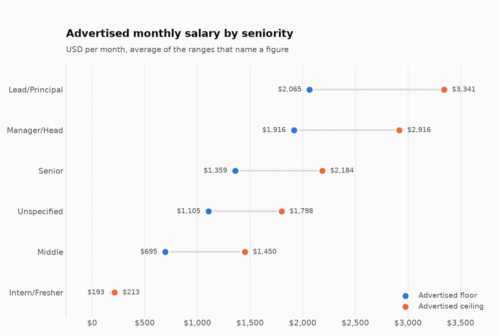
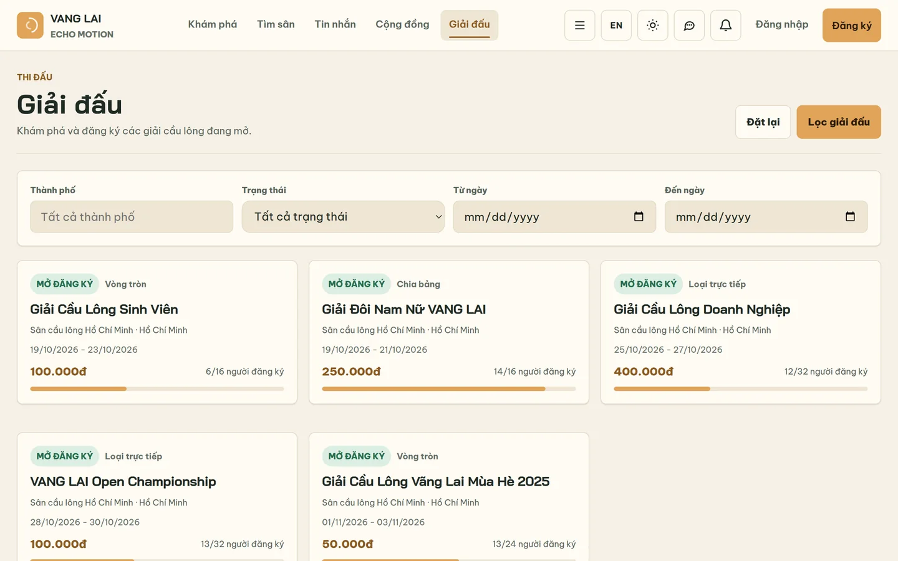

Phúc, or Ben in English. I'm a second-year computer science student in Ho Chi Minh
City. I build .NET APIs and Python data pipelines, and I co-founded VANG LAI, a
platform for drop-in badminton.
Averaging those as dollars would have mixed 14 (million dong) with 1,500 (dollars).
My pipeline reads the currency from the text instead of trusting the label. That fix
and three others are in the
case study.
Things I've built
Vietnam IT job market

I collected 672 live postings from 320 companies, cleaned them into SQLite and
asked what employers want. 73% of the postings don't say what they pay, and English
is requested more often than any programming language.
A small read-only REST API over that database, built with ASP.NET Core and Dapper.
It filters and pages results, has health checks and 11 tests, and runs in Docker as
a non-root user. The screenshot runs on demo data.
The home page, running on my machine with demo data.

The tournament list, also on demo data.
A platform for drop-in badminton: finding a session, signing up, paying and running
tournaments, on web and mobile. I co-founded it. I review code before it reaches the
main branch, and I did its security pass, for example moving the admin login token
into an HttpOnly cookie.
The code is private.
Smaller projects
Vietnam market brief: did five large HOSE stocks beat the VN30 ETF from 2024 to 2026?
In October 2026 I'm studying for the Google Analytics certification. From 6 to 12
November I'm taking part in MLH Global Hack Week: Builders Week. I'm open to freelance
work on APIs, data cleaning and dashboards.
Contact
Email is the fastest way to reach me:
pn849222@gmail.com. Tell me what you need
built and when you need it.